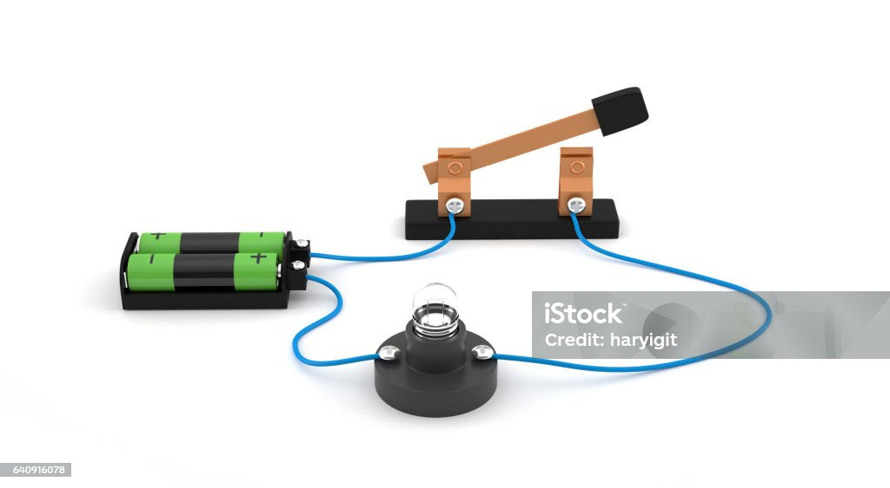

الوحدة الأولى: أجهزة جسم الإنسان
8 أسئلة تفاعلية
🔬 يتكون جسم الإنسان من عدة أجهزة:
🧠 الجهاز العصبي
يتحكم في جميع أجهزة الجسم
💗 الجهاز الدوري
ينقل الدم في جميع أنحاء الجسم
🫁 الجهاز التنفسي
يساعد على التنفس وتبادل الغازات
🍎 الجهاز الهضمي
يهضم الطعام ويمتص العناصر الغذائية
1 أين تبدأ عملية الهضم ميكانيكياً وكيميائياً؟
2 العضو الذي يمتص الماء من الطعام غير المهضوم هو:
3 أي جهاز من أجهزة الجسم يتحكم في جميع الوظائف؟
4 أي جهاز مسؤول عن نقل الأكسجين إلى خلايا الجسم؟
5 ما وظيفة الجهاز التنفسي؟
6 أي عضو من أعضاء الجهاز الهضمي يفرز العصارة الهاضمة؟
7 ما العضو الذي يضخ الدم في الجسم؟
8 ما الجزء المسؤول عن امتصاص المواد الغذائية في الجهاز الهضمي؟
الوحدة الثانية: الدوائر الكهربائية
12 سؤال تفاعلي

⚡ مكونات الدائرة الكهربائية الأساسية:
| المكون | الرمز | الوظيفة |
|---|---|---|
| البطارية (النضيدة) | -| |+ | مصدر الطاقة، لها قطب موجب (+) وسالب (-) |
| المصباح الفتيل | (X) | يضيء عند مرور التيار |
| المفتاح | __/ __ | يفتح ويغلق الدائرة |
| السلك النحاسي | _______ | يوصل التيار بين المكونات |
1 ما هو نوع السلك الأفضل لتوصيل الكهرباء في الدائرة؟
2 الدائرة التي لا يمر فيها تيار لأن المفتاح مفتوح تسمى:
3 ما رمز البطارية في الرسم التخطيطي للدائرة؟
4 ما عدد أقطاب البطارية (النضيدة)؟
5 أي مما يلي من مكونات المصباح الفتيل؟
6 ما وظيفة المفتاح في الدائرة الكهربائية؟
7 ما الذي يحدث عندما نغلق الدائرة الكهربائية؟
8 ما الغاز الموجود داخل المصباح الفتيل؟
9 أي مادة من المواد التالية تعتبر عازلاً للكهرباء؟
10 ما الذي يحدث إذا وصلنا البطارية بشكل عكسي في الدائرة؟
11 ما هو الدائرة القصيرة (Short Circuit)؟
12 ما عدد المصابيح التي يمكن إضاءتها ببطارية واحدة؟
الوحدة الثالثة: جهاز النقل في النبات
6 أسئلة تفاعلية
🌱 يتكون جهاز النقل في النبات من:
| النوع | المادة المنقولة | اتجاه النقل | الوظيفة |
|---|---|---|---|
| أوعية الخشب | الماء والأملاح المعدنية | من الجذور إلى الأوراق | تغذية النبات بالماء |
| أوعية اللحاء | الغذاء المصنع (سكريات) | من الأوراق إلى جميع الأجزاء | توزيع الغذاء |
1 الأوعية التي تنقل الماء والأملاح من الجذور إلى الأوراق تسمى:
2 الغذاء المصنع في الأوراق ينتقل عبر:
3 ما اتجاه نقل المواد في أوعية الخشب؟
4 أي مما يلي ينقله أوعية اللحاء؟
5 ما المادة التي تساعد النبات على امتصاص الماء من التربة؟
6 ماذا يحدث إذا انقطعت أوعية الخشب في النبات؟
الوحدة الرابعة: المنتجات والمستهلكات
10 أسئلة تفاعلية

📚 المفاهيم الأساسية:
المنتجات: هي كائنات حية تصنع غذاءها بنفسها باستخدام عملية البناء الضوئي، مثل النباتات.
المستهلكات: هي كائنات حية تعتمد على غيرها في الغذاء، مثل الحيوانات والإنسان.
المحللات: كائنات تعيد تدوير المواد العضوية من بقايا الكائنات الميتة.
1 أي من الكائنات التالية يعتبر "منتجاً" للغذاء؟
2 الكائنات التي تتغذى على بقايا الكائنات الميتة تسمى:
3 الإنسان يعتبر من:
4 عملية تصنيع النبات لغذائه تسمى:
5 أي من الحيوانات التالية يعتبر من العواشب؟
6 الحيوانات التي تتغذى على اللحوم تسمى:
7 السلحفاة التي تأكل النباتات والحيوانات الصغيرة تعتبر:
8 ما دور المحللات في السلسلة الغذائية؟
9 أي مما يلي ليس من المنتجات؟
10 ما أول حلقة في أي سلسلة غذائية؟
الوحدة الخامسة: لوحة التميز
تسجيل الطلاب المتفوقين
🏆 تسجيل الطالب المتميز
أدخل اسمك ثلاثي ليتم تسجيلك في لوحة الشرف للطلاب المتفوقين
📜 قائمة الشرف:
📊 ملخص الدرجات:
قم بحل الأسئلة في الوحدات المختلفة لترى ملخص درجاتك هنا.